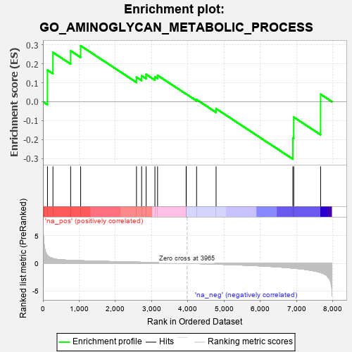

| | | Dataset | 7d |
| Phenotype | NoPhenotypeAvailable |
| Upregulated in class | na_neg |
| GeneSet | GO_AMINOGLYCAN_METABOLIC_PROCESS |
| Enrichment Score (ES) | -0.30310467 |
| Normalized Enrichment Score (NES) | -0.71896064 |
| Nominal p-value | 0.83426183 |
| FDR q-value | 1.0 |
| FWER p-Value | 1.0 |
Table: GSEA Results Summary

Fig 1: Enrichment plot: GO_AMINOGLYCAN_METABOLIC_PROCESS
Profile of the Running ES Score & Positions of GeneSet Members on the Rank Ordered List
| PROBE | GENE SYMBOL | GENE_TITLE | RANK IN GENE LIST | RANK METRIC SCORE | RUNNING ES | CORE ENRICHMENT | | 1 | GLB1 | | | 125 | 1.416 | 0.1668 | Yes |
| 2 | HGF | | | 276 | 0.870 | 0.2601 | Yes |
| 3 | UGDH | | | 764 | 0.540 | 0.2684 | Yes |
| 4 | AKT1 | | | 1040 | 0.476 | 0.2952 | Yes |
| 5 | GLCE | | | 2580 | 0.215 | 0.1295 | No |
| 6 | HAS1 | | | 2722 | 0.195 | 0.1369 | No |
| 7 | CLN6 | | | 2847 | 0.177 | 0.1441 | No |
| 8 | CHP1 | | | 3089 | 0.138 | 0.1316 | No |
| 9 | GCNT2 | | | 3162 | 0.128 | 0.1390 | No |
| 10 | GPC6 | | | 3950 | 0.002 | 0.0404 | No |
| 11 | EXT1 | | | 3954 | 0.001 | 0.0402 | No |
| 12 | GPC1 | | | 4238 | -0.048 | 0.0109 | No |
| 13 | PIM1 | | | 4776 | -0.152 | -0.0370 | No |
| 14 | HEXB | | | 6894 | -0.864 | -0.1918 | No |
| 15 | CSPG4 | | | 6918 | -0.878 | -0.0816 | No |
| 16 | HEXA | | | 7659 | -1.659 | 0.0392 | No |
Table: GSEA details [plain text format]
Fig 2: GO_AMINOGLYCAN_METABOLIC_PROCESS: Random ES distribution
Gene set null distribution of ES for GO_AMINOGLYCAN_METABOLIC_PROCESS